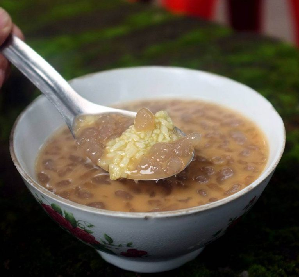
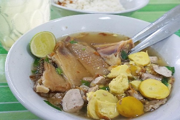
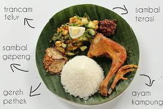

Makanan khas pertama yang dapat dijumpai di Klaten adalah kepel. Kepel termasuk dalam jenis makanan kudapan yang berbentuk kepalan tangan yang berada di daerah Pedan.
Makanan ini masuk dalam jajanan tradisional. Bahan untuk membuatnya terdiri dari tepung gandum, bawang merah, merica, bawang putih, dan garam. Cemilan ini dapat kamu makan dengan dicocol saus sambal dengan ditemani teh tawar. Kepel merupakan cemilan yang dapat dijumpai di Alun-alun Kota.
Di sini banyak pedagang kepel yang menjual dengan harga 200 rupiah saja per butir. Jika ingin yang khas maka carilah kepel khas Pedan Klaten.
Bakmi Miroso
Bakmi miroso merupakan kuliner legendaris yang wajib kamu cicipi jika berkunjung ke Kota Klaten. Makanan ini adalah salah satu makanan khas Klaten jenis chinese food yang halal.
Bahan dasarnya terbuat dari nasi goreng, ayam koloke, mie pangsit dan dibuat dengan resep bumbu turun temurun.
Jika kamu penasaran dengan rasa masakan ini dapat datang di rumah makan bakmi miroso dekat alun-alun klaten.

Dawet Bayat
Dawet bayat adalah salah satu minuman khas daerah Klaten. Saat berkunjung di kota Klaten kamu wajib menikmati minuman yang satu ini.
Dawet bayat biasa dijual di pinggir jalan dengan cara dipikul. Menggunakan penopang rotan, keduk dan kuali gerabah berisikan cendol, santan dan juruh penjual dawet berkeliling.
Rasanya yang manis gurih yang dihasilkan dari cendol bersama santan kelapa akan terasa menyegarkan saat kamu meminumnya. Gula yang dijadikan juruh terbuat dari gula merah pilihan. Sedangkan santannya diolah dari kelapa yang utuh dan masih segar.

Sop Ayam Pak Min
Seporsi Sop Ayam Pak Min Klaten berisi soun, irisan daging ayam yang bebas dipilih pembeli, irisan seledri, dan taburan bawang goreng. Usaha Sop Ayam Pak Min Klaten dirintis oleh Tugimin. Sop Ayam Pak Min kali pertama diolah mendiang Tugimin Mangun Suwito dan istrinya, Wagiyem.
Tugimin yang kala itu bekerja serabutan terinspirasi dari bibinya yang sukses berjualan sop. Tugimin dan Wagiyem lantas menjajakan sup dengan dipikul dari kampung ke kampung. Lambat laun, makin banyak pelanggannya.
RUsaha Tugimin berkembang dan mulai mencari tempat untuk warung sup pertamanya, yakni di emperan toko dekat Masjid Raya Klaten. Dari sana, usahanya makin maju hingga akhirnya bisa membeli ruko di Pasar Klaten.
Sop Ayam Pak Min kemudian untuk kali pertama membuka cabang di Pandanrejo, depan Kantor Inspektorat Klaten pada 1999. Pembukaan cabang itu atas inisiasi Ragil dengan modal dari pesangon setelah di-PHK dari perusahaan saat terjadi kerusuhan 1997.
Kini, usaha Sop Ayam Pak Min Klaten diteruskan oleh keempat anaknya setelah Pak Min meninggal pada 2003 lalu. Warung Sop Ayam Pak Min memiliki sekitar 13 menu makanan dan beberapa jenis minuman.

Sego Wiwit
Makanan khas Klaten yang satu ini memang cukup langka. Biasanya sego wiwit hanya ada saat tradisi selamatan atau sedekah bumi. Hal ini sebagai ucap rasa syukur atas hasil panennya.
Namun seiring perkembangan zaman, makanan ini sudah banyak dijajakan di warung-warung tradisional atau restoran.
Kuliner ini terdiri dari nasi dengan lauk pauk, baik hewani maupun nabati. Soal harga kamu dapat membelinya mulai dari Rp 7.000 per porsi.
Alamat: Jl.Manisronggo, Tlogo, Kabupaten Klaten, Jawa Tengah